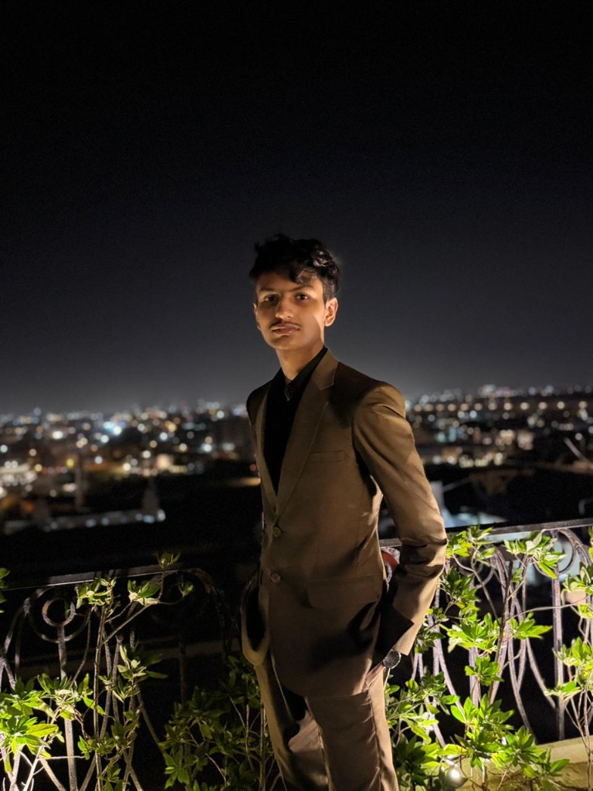

SYS.ONLINE // PROTOCOL: ELDRITCH_ARCADE_v9.2
00:00:00 UTC
FPS: 60
PILOT IDENTITY

MBQ
Muhammad Bilal Qadri
MBilal09-may // FULL-STACK & ML
TACTICAL RADAR
SYS_INTEGRITY
ML_BUFFER
TARGET_LOCK
MISSION MATRIX // ACTIVE NODES
USE [W][A][S][D] / ARROWS TO NAVIGATE • [ENTER] / CLICK TO LAUNCH
TACTICAL DOSSIER // INSPECT
TARGET IDENT: [NODE-01]
INITIALIZING TELEMETRY...
Highlight or hover over a mission card in the matrix to stream decrypted telemetry data...
PARADIGM MANIFESTO
This portfolio rejects conventional web hierarchy — eliminating all standard headers, footers, navigation bars, and static cards in favor of a live, gamified tactical cockpit.
By fusing arcade mechanics, inline Web Audio synthesizers, procedural CRT scanlines, and tactile keyboard controls, it treats developer work not as passive resume bullet points, but as executable mission nodes inside an immersive Eldritch-Cyber universe.
DIAGNOSTIC LOG